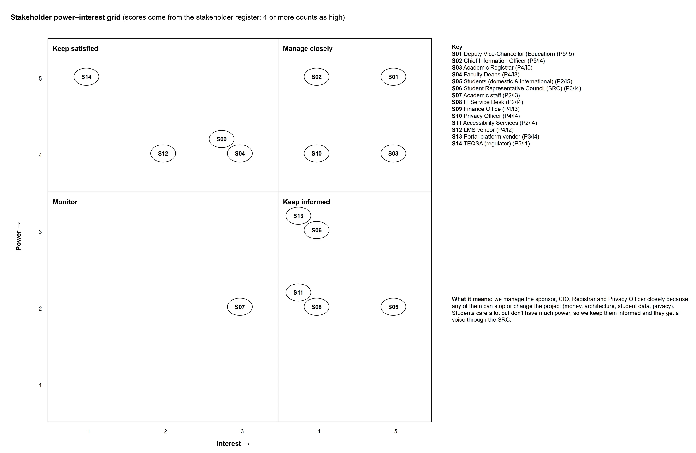
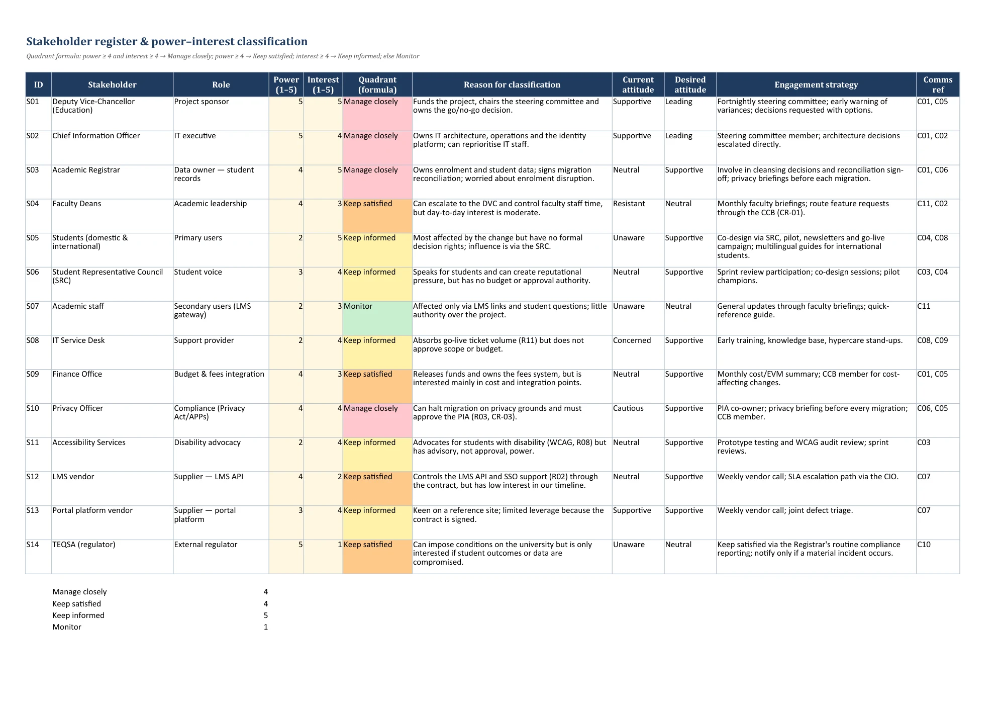

Page 2
Charter & stakeholders
Purpose: Record what the sponsor authorised and who must be engaged, and why.
Charter summary
| Item | Detail |
|---|---|
| Sponsor | Deputy Vice-Chancellor (Education) |
| Project manager | Project Manager, SCU Digital Services |
| Timeline | 6 Jul 2026 → go-live 20 Jan 2027 (deadline 5 Feb 2027) → closure 11 Mar 2027 |
| Budget | BAC $900,180 + contingency $90,750 + management reserve $45,009 = $1,035,939 |
| Success criteria | Go-live by 5 Feb 2027 with zero enrolment outage Migration reconciliation ≥ 99.5% of student records Delivered within total budget (BAC + contingency reserve) WCAG 2.1 AA audit with 0 critical failures Student satisfaction ≥ 4.0/5 in the post-go-live survey |
| Assumptions | Existing identity platform (Microsoft Entra ID) can act as the SSO identity provider. The LMS vendor provides a documented API and a sandbox by 31 Aug 2026. Registrar's office makes data owners available for cleansing decisions within 2 working days. Two testers and three developers are dedicated from 31 Aug 2026. Legacy portals stay available until decommissioning (after hypercare). |
| Constraints | Hard go-live deadline: 5 Feb 2027 (before Semester 1 orientation). No cutover during enrolment peaks. Privacy Act 1988 (Cth) and APP 11: no identifiable data in non-production without masking. WCAG 2.1 AA compliance is mandatory (Disability Discrimination Act 1992). Budget approved by Council: BAC plus contingency; management reserve held by the sponsor. University shutdown 24 Dec 2026 – 1 Jan 2027 (no work scheduled). |
| Approval | M1 Charter approved 17 Jul 2026 by the steering committee |
Stakeholder register
| ID | Stakeholder | Power | Interest | Quadrant | Reason for classification | Attitude now → desired | Comms |
|---|---|---|---|---|---|---|---|
| S01 | Deputy Vice-Chancellor (Education) | 5 | 5 | Manage closely | Funds the project, chairs the steering committee and owns the go/no-go decision. | Supportive → Leading | C01, C05 |
| S02 | Chief Information Officer | 5 | 4 | Manage closely | Owns IT architecture, operations and the identity platform; can reprioritise IT staff. | Supportive → Leading | C01, C02 |
| S03 | Academic Registrar | 4 | 5 | Manage closely | Owns enrolment and student data; signs migration reconciliation; worried about enrolment disruption. | Neutral → Supportive | C01, C06 |
| S04 | Faculty Deans | 4 | 3 | Keep satisfied | Can escalate to the DVC and control faculty staff time, but day-to-day interest is moderate. | Resistant → Neutral | C11, C02 |
| S05 | Students (domestic & international) | 2 | 5 | Keep informed | Most affected by the change but have no formal decision rights; influence is via the SRC. | Unaware → Supportive | C04, C08 |
| S06 | Student Representative Council (SRC) | 3 | 4 | Keep informed | Speaks for students and can create reputational pressure, but has no budget or approval authority. | Neutral → Supportive | C03, C04 |
| S07 | Academic staff | 2 | 3 | Monitor | Affected only via LMS links and student questions; little authority over the project. | Unaware → Neutral | C11 |
| S08 | IT Service Desk | 2 | 4 | Keep informed | Absorbs go-live ticket volume (R11) but does not approve scope or budget. | Concerned → Supportive | C08, C09 |
| S09 | Finance Office | 4 | 3 | Keep satisfied | Releases funds and owns the fees system, but is interested mainly in cost and integration points. | Neutral → Supportive | C01, C05 |
| S10 | Privacy Officer | 4 | 4 | Manage closely | Can halt migration on privacy grounds and must approve the PIA (R03, CR-03). | Cautious → Supportive | C06, C05 |
| S11 | Accessibility Services | 2 | 4 | Keep informed | Advocates for students with disability (WCAG, R08) but has advisory, not approval, power. | Neutral → Supportive | C03 |
| S12 | LMS vendor | 4 | 2 | Keep satisfied | Controls the LMS API and SSO support (R02) through the contract, but has low interest in our timeline. | Neutral → Supportive | C07 |
| S13 | Portal platform vendor | 3 | 4 | Keep informed | Keen on a reference site; limited leverage because the contract is signed. | Supportive → Supportive | C07 |
| S14 | TEQSA (regulator) | 5 | 1 | Keep satisfied | Can impose conditions on the university but is only interested if student outcomes or data are compromised. | Unaware → Neutral | C10 |

diagrams/D02_power_interest.drawio (diagrams.net).
A2_GroupXX_ProjectData.xlsx › Stakeholder_Register.Interpretation
Four stakeholders can stop the project: the sponsor (funding), CIO (architecture), Registrar (data owner) and Privacy Officer (can halt migration). They are managed closely and sit on the steering committee or CCB. Deans are powerful but resistant, so feature requests are routed through change control. Students have high interest but little formal power, so the SRC represents them in sprint reviews (PMI, 2021).